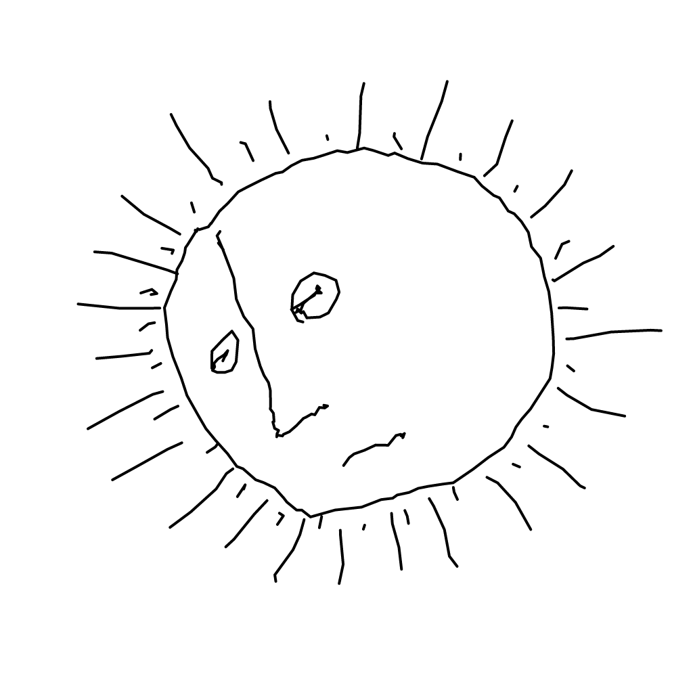

<p><a href="https://ayinpress.org/the-moon/" target="_blank">The Moon</a> is an endless interactive animation using The Symbolism of the Tarot by P. D. Ouspensky as a source text, published by Ayin Press in the journal <i>The Holy Fool</i>.</p>

